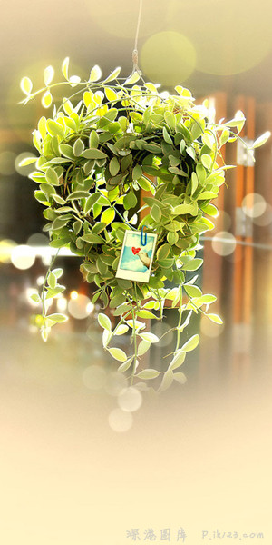

首页碎言碎语 (just a few words)

>>真正的勇士，穷还追星，丑还颜控，胖还贪吃，困还熬夜，死也不写作业。
你是这样的勇士吗？
>>一直认为，所谓新鲜感，不是和未知的人一起去做同样的事情，而是和已知的人
验未知的人生。
>>如果你很迷恋一个人，那你一定配不上他,感情从来不是忍受，不是一个人的死撑，而是彼此的认定。
>>分开也是一种方式，来证明在一起是否真的有意义。剪过短发，留过长发，爱过烂人，红过眼睛，看透爱情。我们一直都在赌，可以哭但不要认输。
>>所谓倒霉，就是一失足成大瘸子，再回首又闪了腰。
那些曾经以为念念不忘的事情就在我们念念不忘的过程里，被我们遗忘了。
>>好听的话容易打动人，好心的话容易得罪人。
吃亏吃到再也吃不进的时候，就不会再吃亏了。
人生总有那么一两件傻事是在你自己感觉不傻的情况下做的，这没什么。


>>你在公交车上看到骑自行车的人在寒风中拼命蹬车不由庆幸，骑自行车的人看到在公交车上挤成沙丁罐头的你不由窃喜，原来短处都是从别人身上发现的。
>>幽默胜过直白，话少胜过多言；坦率胜过伪装，自然胜过狡辩；心静何来 多梦，苦索不如随缘。
>>要一个人没有任何缺点，他也会丧失所有优点。
>>我们越是接近事物的起源，事物对于我们就越是变得兴味索然。